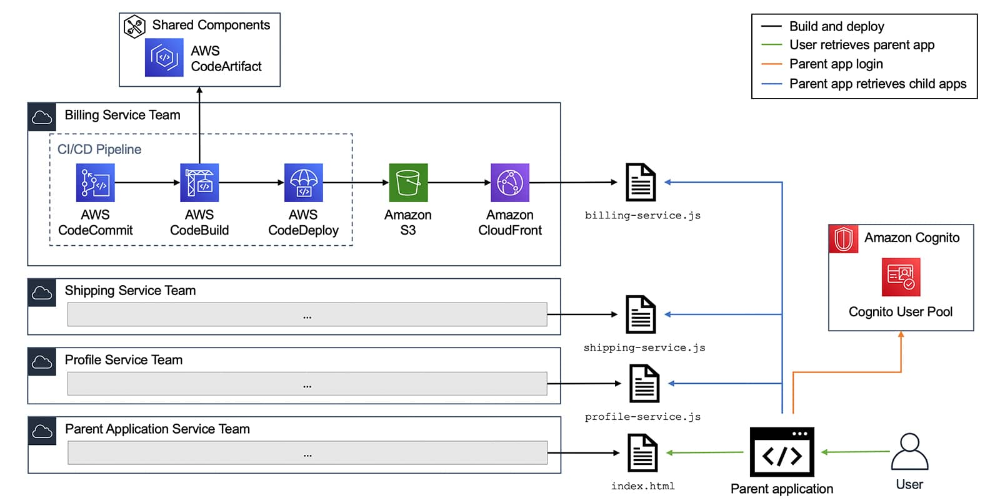

参考架构#
认证#
Identity and Access Management (IAM) 解决方案
认证
Amazon Cognito
Cognito User Pool
单点登录 SSO 解决方案
登录#
密码加密
How To Safely Store A Password | codahale.com
单点登录
What is SSO (Episode 7) - by Alex Xu (bytebytego.com)
EP34: Session, cookie, JWT, token, SSO, and OAuth (bytebytego.com)
无服务器App
Structuring a Real-World Serverless App
Best practices for organizing larger serverless applications | AWS Compute Blog (amazon.com)
前台#
前台
S3
CloudFront (CDN)
素材#
图形素材
设计工具
基本架构EC2#
前台
S3
CloudFront (CDN)
后台
Application Load Balancer (ALB)
EC2 (2台或扩展组)
基本架构Serverless#
前台
S3
CloudFront (CDN)
后台
API Gateway
Lambda
可观测性#
可观测性
ELK
ElasticSearch
Logstach
Kibana
Splunk
Datadog
Grafana
Graydog
Sumo
数据缓存#
缓存
ElasiCache for Redis
数据库#
数据库
DynamoDB
RDS for PostgreSQL
CI/CD#
共享组件服务
AWS CodeArtifact
CI/CD管道
AWS CodeCommit
AWS CodeBuild
AWS CodeDeploy

技术栈#
React + Next.js front-end with Tailwind
Next.js or Express derivative back-end
Prisma (+ Apollo if using GraphQL)
Postgres (flavored), Mongo, Firestore, or Dynamo database
Python based backends if the company is doing any ML
React: React
Next.js: Next.js by Vercel - The React Framework (nextjs.org)
Tailwind: Tailwind CSS - Rapidly build modern websites without ever leaving your HTML.
Express: Express - Node.js web application framework (expressjs.com)
Prisma: Prisma | Next-generation ORM for Node.js & TypeScript
Apollo: Apollo GraphQL | Supergraph: unify APIs, microservices, & databases in a composable graph
Postgres: PostgreSQL: The world’s most advanced open source database
MongoDB: https://www.mongodb.com/
Firestore: https://firebase.google.com/
DynamoDB: Fast NoSQL Key-Value Database – Amazon DynamoDB – Amazon Web Services
Python: Welcome to Python.org
React#
React: React
在线编辑器
创建React App
npx create-next-app